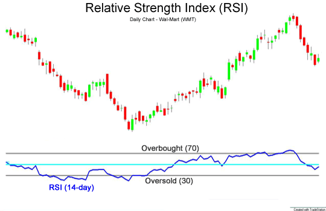

RSI(투자지표)
상대강도지수(相對强度指數, 영어: relative strength index, RSI)는 주식, 선물, 옵션 등의 기술적 분석에 사용되는 보조 지표이다. RSI는 가격의 상승압력과 하락압력 간의 상대적인 강도를 나타낸다. 1978년 미국의 월레스 와일더(J. Welles Wilder Jr.)가 개발했다.
개념
RSI는 일정 기간 동안 주가가 전일 가격에 비해 상승한 변화량과 하락한 변화량의 평균값을 구하여, 상승한 변화량이 크면 과매수로, 하락한 변화량이 크면 과매도로 판단하는 방식이다.
계산 방법은 다음과 같다. 주어진 기간의 모든 날의 주가에 대해서
1. 가격이 전일 가격보다 상승한 날의 상승분은 U(up) 값이라고 하고,
2. 가격이 전일 가격보다 하락한 날의 하락분은 D(down) 값이라고 한다.
3. U값과 D값의 평균값을 구하여 그것을 각각 AU(average ups)와 AD(average downs)라 한다.
4. AU를 AD값으로 나눈 것을 RS(relative strength) 값이라고 한다.
5. RS 값이 크다는 것은 일정 기간 하락한 폭보다 상승한 폭이 크다는 것을 의미한다.
6. 다음 계산에 의하여 RSI 값을 구한다.
RSI = RS / (1 + RS)
또는, 다음과 같이 구해도 결과는 동일하다.
RSI = AU / (AU + AD)
대체로 이 값은 백분율로 나타낸다.
이 지표의 파라메터로는 기간을 며칠 동안으로 할 것인가가 있다. Welles Wilder는 14일을 사용할 것을 권유했다. 대체로 사용되는 값은 9일, 14~15일, 25~28일 등이다.
RSI 그래프는 이동평균선을 함께 나타내는 것이 보통이며, 이동평균선을 며칠선으로 할 것인가 역시 파라메터로 주어진다. RSI를 15일에 대하여 구하고 5일 이동평균선을 함께 표시하는 경우 그래프에 (15, 5)라고 표시해주는 것이 일반적이다.
유사한 지표로는 스토캐스틱이 있다. RSI 그래프의 형태는 fast stochastic과 비슷하게 나온다.